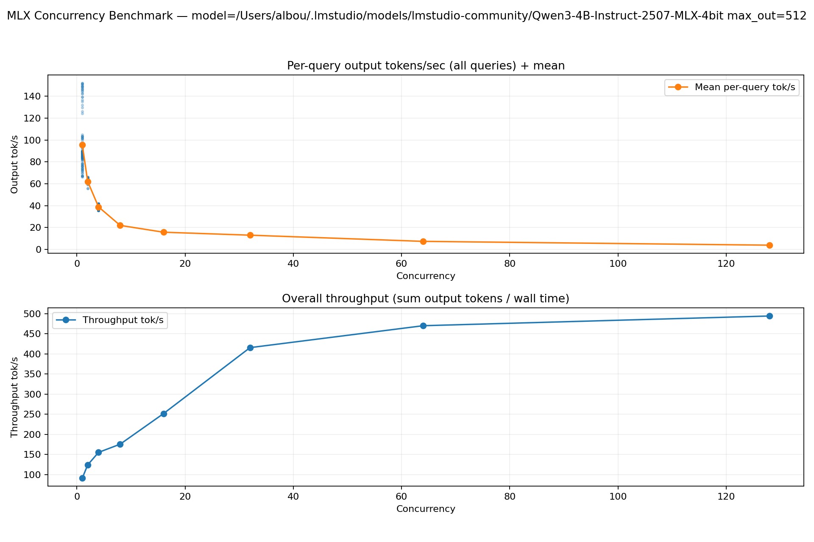
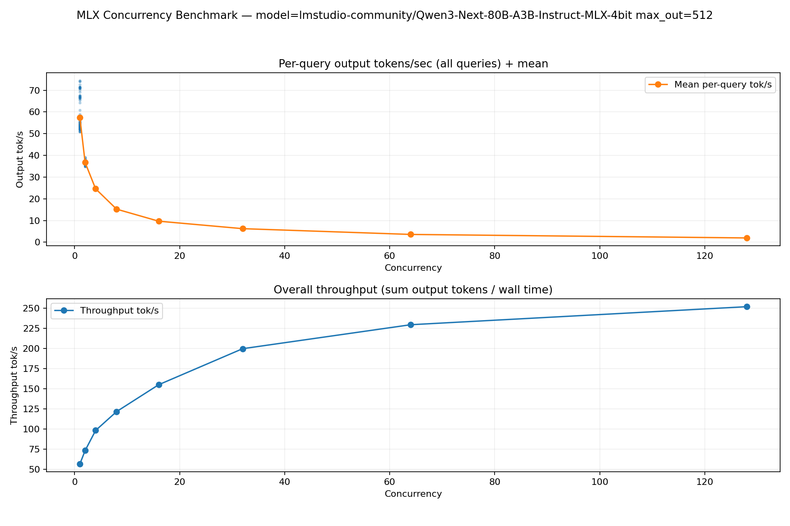

Concurrency & Throughput (with MLX)
This guide explains how to think about concurrency in AbstractCore (async vs batching), and how to measure real throughput on Apple Silicon via MLX.
Table of Contents
Definitions (important) MLX in AbstractCore (what to expect) MLX concurrency benchmark (recommended) Prompt caching (separate concern)Definitions (important)
- Concurrency: running multiple requests “at the same time” (e.g. via
asyncio.gather). - Batching / continuous batching: running multiple requests inside one model execution loop so the backend can schedule work efficiently (often higher throughput than N independent calls).
For HTTP providers (OpenAI/Anthropic/LMStudio/Ollama), concurrency is mostly I/O bound and async yields big wins. For local providers (MLX/HuggingFace), concurrency is compute bound and naive thread-parallelism can be slower (or unsafe) unless the backend supports a batching scheduler.
MLX in AbstractCore (what to expect)
MLXProviderloads one in-process model per provider instance (abstractcore/providers/mlx_provider.py).BaseProvider.agenerate()provides async support for all providers, but for MLX it falls back toasyncio.to_thread()(abstractcore/providers/base.py). This keeps the event loop responsive, but it does not guarantee higher throughput, and can trigger MLX/Metal thread-safety issues if you truly run multiple generations concurrently in the same process.
If your goal is measuring throughput vs concurrency on a single MLX model, use continuous batching via mlx-lm (next section).
MLX concurrency benchmark (recommended)
Use examples/mlx_concurrency_benchmark.py to run many distinct prompts through a single MLX model and produce:
- realtime progress logs
- a summary CSV (TOTAL tok/s)
- a per-query CSV (per-query tok/s distribution)
- a PNG plot (TOTAL tok/s curve + AVG per-query tok/s curve)
Install deps
python -m pip install -e ".[mlx,mlx-bench]"
Run a sweep (custom concurrency levels)
python examples/mlx_concurrency_benchmark.py \
--model lmstudio-community/Qwen3-4B-Instruct-2507-MLX-4bit \
--queries 50 \
--concurrency-levels 1 2 4 8 16 32 \
--max-output-tokens 256 \
--progress-interval 15
Stable prompt sets (recommended for comparing models)
To compare across runs and across models, use a fixed prompt set file and keep it constant:
python examples/mlx_concurrency_benchmark.py \
--model lmstudio-community/Qwen3-4B-Instruct-2507-MLX-4bit \
--prompts-file examples/assets/mlx_benchmark_prompts_128.json \
--queries 128 \
--concurrency-levels 1 2 4 8 16 32 64 128 \
--max-output-tokens 512 \
--progress-interval 15
Artifacts are written under test_results/mlx_concurrency/ (untracked). This doc includes copies of a few key plots/CSVs under docs/assets/mlx_concurrency/ so the documentation remains portable.
Interpreting results
- TOTAL tok/s (throughput):
sum(output_tokens) / wall_timefor the run. - AVG per-query tok/s: mean of
(output_tokens / query_duration)across queries. - TTFT (prefill latency): time-to-first-token (lower is better for interactivity).
- Decode tok/s: token generation speed after the first token is observed (higher is better).
Typical behavior: - TOTAL tok/s usually rises with concurrency until you saturate the device. - AVG per-query tok/s usually drops with concurrency (each request gets a smaller share of compute). - Non-monotonic points can happen (prefill overhead, cache effects, memory pressure).
Realistic MLX concurrency results (MBP M4 Max, 128GB)
These runs were executed on a MacBook Pro (M4 Max, 128GB) with:
- --queries 128
- --max-output-tokens 512 (so total_out = 128 * 512 = 65536 output tokens per sweep point)
- --concurrency-levels 1 2 4 8 16 32 64 128
- prompt set: examples/assets/mlx_benchmark_prompts_128.json
Key takeaways: - Throughput scales with concurrency (continuous batching keeps the device busy). - Interactivity degrades with concurrency: TTFT rises sharply as concurrency increases (especially for larger models). - A good “real-world” concurrency is the one that hits your TTFT budget (interactive) or your throughput goal (batch/offline).
mlx-community/gemma-3-1b-it-qat-4bit
Peak throughput keeps climbing up to 128 concurrent requests on this device (small model).

Raw artifacts:
- docs/assets/mlx_concurrency/mlx_concurrency_summary_20260128_210057.csv
- docs/assets/mlx_concurrency/mlx_concurrency_plot_20260128_210057.png
conc | throughput(tok/s) | avg_ttft(s) | avg_decode(tok/s) | avg_query(tok/s)
-----+------------------+------------+-------------------+-----------------
1 | 204.29 | 0.04 | 212.05 | 208.60
2 | 268.39 | 0.10 | 137.73 | 134.42
4 | 406.44 | 0.20 | 105.56 | 101.67
8 | 490.00 | 0.34 | 63.77 | 61.25
16 | 885.04 | 0.62 | 59.18 | 55.32
32 | 1594.77 | 1.18 | 56.20 | 49.84
64 | 1888.28 | 2.48 | 34.35 | 29.51
128 | 2011.85 | 5.52 | 18.89 | 15.72
lmstudio-community/Qwen3-4B-Instruct-2507-MLX-4bit
Throughput increases with concurrency, but TTFT becomes large above ~32–64 (batch-friendly, less interactive).

Raw artifacts:
- docs/assets/mlx_concurrency/mlx_concurrency_summary_20260128_215056.csv
- docs/assets/mlx_concurrency/mlx_concurrency_plot_20260128_215056.png
conc | throughput(tok/s) | avg_ttft(s) | avg_decode(tok/s) | avg_query(tok/s)
-----+------------------+------------+-------------------+-----------------
1 | 90.98 | 0.21 | 98.83 | 95.48
2 | 123.96 | 0.40 | 65.08 | 62.02
4 | 155.09 | 0.68 | 40.87 | 38.85
8 | 175.47 | 1.31 | 23.20 | 21.94
16 | 251.45 | 2.50 | 16.99 | 15.72
32 | 415.64 | 4.98 | 14.84 | 13.00
64 | 470.19 | 10.36 | 8.61 | 7.35
128 | 494.33 | 22.71 | 4.65 | 3.86
lmstudio-community/Qwen3-Next-80B-A3B-Instruct-MLX-4bit
Large model: throughput improves with concurrency, but TTFT becomes very high at large concurrency (good for throughput-only batch jobs; poor for interactive latency).

Raw artifacts:
- docs/assets/mlx_concurrency/mlx_concurrency_summary_20260128_202929.csv
- docs/assets/mlx_concurrency/mlx_concurrency_plot_20260128_202930.png
conc | throughput(tok/s) | avg_ttft(s) | avg_decode(tok/s) | avg_query(tok/s)
-----+------------------+------------+-------------------+-----------------
1 | 56.70 | 0.23 | 58.85 | 57.49
2 | 73.39 | 0.64 | 38.38 | 36.71
4 | 98.34 | 1.47 | 26.41 | 24.59
8 | 121.74 | 2.70 | 16.52 | 15.22
16 | 155.01 | 5.11 | 10.70 | 9.69
32 | 199.70 | 10.11 | 7.10 | 6.24
64 | 229.42 | 20.28 | 4.17 | 3.58
128 | 251.78 | 43.03 | 2.35 | 1.97
Prompt caching (separate concern)
The benchmark script does not use prompt caching; it intentionally treats each query as an independent request.
MLXProvider does support best-effort in-process prompt caching via prompt_cache_key (KV/prefix caches). This is mainly useful when many calls share a long prefix (system prompt, tool schema, long chat history). It is not “free”: KV caches consume memory, and reusing the same cache key across unrelated requests can contaminate context.
For deeper research notes, see docs/research/concurrency/.